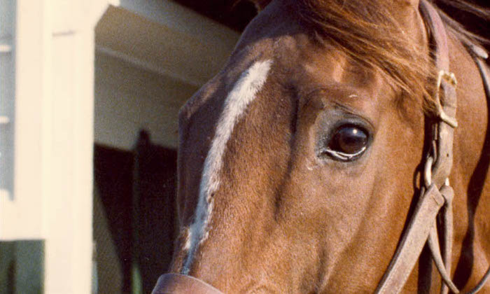

Local Archive Extensions
These added links keep the surviving pages reachable from this version entry without changing the current page layout.
Recovered Home Highlights
Welcome to the all-new Reines-de-Course.com
The late archive keeps the same WordPress home structure, so this digest restores the key homepage pathways that lead into the surviving posts and sections.
Observations
Latest Updates
- Pedlines Index remains available under Pedlines.
- Reines in the 2018 Breeders' Cup remains accessible in Other.
- Reines A-Z continues to serve as the main family entry point.
- Bloodlines and Commentaries / Essays remain browsable from the surviving section pages.
- Eclipse Award coverage remains available from the late archive.
- General still carries Ron's notes and observations.
- About preserves the site's closing self-description and context.
Browse Final Snapshot
Research Shortcuts

What’s New?
Eclipse Award Vote Pages Updated for 2020 Results
New Reines named in Pedlines issue #187: Leslie’s Lady (Family 23) plus Plencia, Petroleuse, and Pawneese (All Family 9 Main)
Added Reines under Border Bounty (Family 7-A): Eljazzi 1981, Chiang Mai 1997, Rafha (GB) 1987 – Also added: Althea (A-4)
For your convenience we have added links to various sources of Thoroughbred information. These appear at the bottom of this page. Note that Equineline is an excellent place to get free five-cross pedigrees and Thoroughbred Daily News is a must read each morning.
Original Reine stories added to Reines A-Z for Serena’s Song (plus Snoot) and Bahamian (plus Credenda and Hope). We have also added columns to the Light Side section.
Ellen’s original article on *Princequillo added to Remembering section.
Ellen’s tribute to the loss of A.P. Indy in Remembering section
2020 Kentucky Derby Pedigree Insights
Baby Steps Ellen Parker
Is the world suffering from a pandemic or is it merely ‘culling’ like a horse owner asking his broodmare band ‘What you done for me lately, doll?’ What is this insanity of having Belmont-Travers-Derby-Preakness out of order and how will the winners be evaluated as future sires? And if we should happen to have a Triple Crown winner, would he forever be an asterisk or will he eventually blend into the fabric of history, which seems most likely.
We’ve made some predictions in general we think might apply – and our Reines like *Knight’s Daughter, doubled in Pulpit and Beadah, taproot for Tapit, have certainly been brilliant stars. But this year we have multiple new things to keep an eye on. Let’s have a look:
The Top Contenders and Their Inbreeding Ellen Parker
But still and all we have a feeling this might be a Myrtlewood kind of a year. Not just because her two torch bearers, Seattle Slew and Mr. Prospector carry her name so far and wide, but because she is many other places as well. But let’s leave that for a bit and concentrate on just Slew.
Some of what fascinates us: Tiz the Law (x3 Slew), Art Collector tail-male Slew over a classic cross with Private Account; Honor AP (our personal favorite) – tail-male to Seattle Slew plus tail-female to Myrtlewood, inbred to *Uvira II; King Guillermo, Slew sire of 2nd dam, Slow Down; Max Player, another Honor Code with a classic Slew pattern over Numbered Account and similar to our much loved and sadly gone California Chrome.
Storm the Court is tail-female to large-heart mare Pocahontas (family 3-N) via Pinny, his broodmare sire is Tejano Run from the same branch of Éclair that gave us Lady Eli and he has a fairly common double of Buckpasser.
At first glance Sole Volante seems to be a grass type. And while he will likely will do quite well on that surface, we don’t see why dirt -or 1-1/4 miles will be any trouble at all for him.
His male line is Storm Cat and sire Karakontie (JPN) is out of a Sunday Silence mare. We are sure no one has forgotten what a great dirt horse Sunday Silence was.
The best of his grass blood comes from a Miesque double and a cross of Mill Reef’s son Shirley Heights.
His female line is Throttle Wide, generally considered more dirt than turf.
We are loving the Miesque x2/Sunday Silence/Mill Reef. There would be no tears shed here if he wore the roses.
A newcomer who has not yet won a graded race is the Pegasus winner Pneumatic, a Winchell-bred from their wonderful Carols Christmas family that gave us so many good horses including our beloved Olympio. He is by Uncle Mo out of the stakes placed Tapit mare Teardrop, a full sister to G3 winner War Echo and a ¾ to G1 winner Pyro.
He’s outcrossed within the first five removes but has an intriguing Round Table x2/Monarchy, x2 The Axe II (dam only), and lots of Frizette via Siberian Express, Mr. Prospector and Seattle Slew.
Beaten almost eight lengths when fourth in the Belmont, he has lots of room to improve and a confidence-builder now in the bank. Before this year is out, he will surely be heard from and we would not be shocked to see him hit the board in the Derby.
Winning Impression, a Paynter gelding, is the latest Derby entrant.
Tailing to the *Mahmoud daughter *Beaukiss (16-f), his dam is inbred to Hoist the Flag, he has a lovely Incantation double and a background of Tartan stalwarts like Relaunch/In Reality and Fappiano/Unbridled.
With all that power it would be no surprise to see him hit the board in this non-traditional Derby.
Fillies
As of this writing, we really don’t expect to see any fillies in the Derby but we can’t be sure. Here the top three and we must admit a soft spot for Bonny South with her Holy Bull/Tapit/x2 Nijinsky II cross and a Chris Evert tail-female line. (That’s old Calumet blood, after all).
Swiss Skydiver, who has been the soul of consistency has a Halo double in her ex-pat sire which means inbreeding to Almahmoud – hardly unique. She tails to Cloud High and boasts the grand Johannesburg as her broodmare sire.
Gamine – Wins by huge margins in breathtaking style. She has an Icecapade double, tails to Man o’ War’s daughter Armada (x2 Bend Or), which is Sailor’s clan. Kafwain, a real favorite of ours, is her broodmare sire.
A Possible Trend?
Slew earned his respect the hard way -the John Henry way in eyeball-to-eyeball combat. And while the Derby hopefuls are no less full of Northern Dancer, Mr. Prospector or Secretariat daughters, there is something dominant about Slew’s contribution, coupled with something else that might indicate a glimmer of hope.
One looks at this smattering of youngsters and also sees the following: Authentic (x2 Icecapade); Basin (x2 Damascus on top of Liam’s Map’s delicious Tartan stew of In Reality/Aspidistra); King Guillermo (x2 Dixieland Band); Thousand Words (x2 Round Table supported only via his dam and from Harlan’s family); Dr. Post (two extra Frizette lines via Princess Palatine and Durazna- that’s five lines of her close in); Ete Indien (excellent contribution of ‘good grey blood’ via Rubiano, El Prado and Cozzene); Ny Traffic (from the family of Vaguely Noble’s Quilma line); Modernist ( x2 Kris S., tailing to Meadow Maid); Max Player from E. P. Taylor’s Cold Reply line.
Now don’t get me wrong. It’s not as though breeders suddenly ran out and brought in mustangs or Suffolk Punches. But does anyone else besides me see a bit of dare I say creative thinking? Maybe people willing to zig instead of always zagging? Even experimenting?
If we see what we think we see, this might be the beginning of a trend, with California’s Sir Prancealot its flag bearer of the type thing that happened when Coolmore turned to first German and then Japanese stock, even to Oz with their glut of Northern Dancer blood. These unprecedented times are not what caused this crop to come into being but it means someone’s been knocking on diversity’s door at bare minimum. We are not seeing outcrosses willy-nilly yet here; it’s baby steps. But then again, that is how everything starts, isn’t it?
The End of Thoroughbred Wagering
Ron Parker
A recent USA TODAY article on how the gambling industry is getting creative during the COVID-19 pandemic crisis, cited all sorts of wagering alternatives available at the sports books while completely ignoring Thoroughbred racing as a way to give football/baseball/basketball bettors a way to invest their idol dollars.
The article noted that “FanDuel rolled out betting lines for politics, reality television shows and for esports. Players can guess the over/under on the high temperature in Phoenix or the amount of times Kayne West tweets over a 24-hour period.
“At the sports book, ‘secondary and tertiary sports,’ as [FanDuel chief marketing officer Mike] Raffensperger put it have ‘really blossomed in this period.'”
And why should Thoroughbred racing fear for its wagering life? Because, as the article said, “the most popular sport to bet on the sports book since the pandemic began is international table tennis.”
Well, I guess I’ll give up handicapping Saratoga and Del Mar. I just heard about a sure thing in the Death Valley tiddlywinks tournament and I’m not about to miss out on these fabulous new wagering opportunities.
Commentary
Ron Parker
In an article in the July 16, 2020 Thoroughbred Daily News Chris McGrath commented that “Whatever the reason, I am convinced that compounded, proven distaff influences represent a far better foundation for a pedigree than the supposed alchemies flimsily peddled between given sire-lines. As I’m always saying, all pedigrees are a mesh of genetic strands and the only reason I can see for picking out just two, as somehow over-riding the rest, is the credulous hunger for a ‘formula’.”
In other words, to quote Bull Hancock, “the family is stronger than the individual.”
This, of course, is precisely what Reines are about–family–which Ellen has devoted the past 40 years to analyzing and publicizing. As she said, after reading McGrath’s article, “At the end of the day, a good broodmare sire is, simply, a stallion bred to mares of good family. Trying to make it more complicated is a waste of time.”
To read McGrath’s complete article, click on the following link which was graciously provided by Thoroughbred Daily News Publisher and CEO Sue Finley.
https://www.thoroughbreddailynews.com/art-collector-puts-sire-back-in-the-frame/
Just so you know PETA is an equal opportunity rabble rouser, consider this January item from USA TODAY:
“Animal rights organization People for the Ethical Treatment of Animals wants the Punxsutawney Groundhog Club to break from tradition, calling for the replacement of Punxsutawney Phil with an animatronic groundhog.”
December 2019
“The breeding business is big business and it is time to also look at pedigrees and durability of the horses being raised today. Once foals are born that are headed to a sales arena, the goal is to make sure that horse has the best possible conformation. Medical procedures are performed almost immediately so that when the horse lands in the sales ring he looks as perfect as possible. Who is studying the correlation between medical procedures and eventual breakdowns to see if this could be a contributing factor? No one would be my guess.”
—Letter to the Editor of Thoroughbred Daily News from Richard B Shapiro, former chairman and a member of the California Horse Racing Board from 2004 to 2008.
October 2019
Just when we considered Perfect Alibi’s Super-Nexus was a rarity, along comes another graded stakes winner, Godolphin homebred Lucullan, victorious in the October 14, 2019 Knickerbocker Stakes (G2) at Belmont Park. Hail to Reason 5S-Round Table 5D, a perfect flip flop of Perfect Alibi’s nexus.
September 2019
The Illinois Racing Board is threatening to deny Arlington racing dates for 2020. Commissioner Thomas McCauley offered Arlington owner Churchill Downs Inc., who have been busily increasing their interests in casinos, the chance to show “whether it really wants to signal to the world, once and for all, that it’s only a gaming and software company and no longer a horse racing enterprise, whether it wants to jeopardize its racing license and all the revenue which the privilege associated with the license will generate.”
Well, if Churchill Downs is really more interested in being a “gaming and software company and no longer a horse racing enterprise,” maybe the Kentucky Racing Commission should take a similar approach and tell Churchill that horse racing should be their focus, not how much money they can haul off in armored trucks from casinos. As in, shape up or we’ll deny your racing dates too.
When you think about it, the Kentucky Derby At Kentucky Downs has a certain ring to it.
Same Song, Second Chorus:
Excerpt from an article in the August 12, 2019 issue of Sports Illustrated, commenting on the death of two prize fighters in a single week:
“Thus began another chorus of calls to abolish the sport and another round of pleas to make it safer. If you love boxing, chances are you were drawn to the very violence that can end a life: At least seven fighters have died in the last four years from the beatings they’ve taken. And while you know that one death is too many, you try to reconcile the sport’s beauty with the mortal danger it presents. Truth is, one doesn’t exist without the other.
“Boxing doesn’t just encourage bloodlust; it rewards it.”
Maybe PETA (People for the Ethical Treatment of Animals) could take a break from trying to outlaw horse racing and devote some of their vituperation towards boxing, as in People for the Ethical Treatment of Adults.
We have added a new section “Archives” and the first addition is an eight year old article by Ron titled “The Super Nexus”. We find it suddenly relevant today since the Super Nexus–in this case Round Table 5S over Hail to Reason 5D–is present in the pedigree of 2019 Spinaway Stakes (G1) winner, two-year-old Perfect Alibi.
We note with interest the recent Jockey Club proposal to cap stallion covers at 140 amid concerns “with the narrowing of the diversity of the Thoroughbred gene pool.”
Hot news tip: Ellen has been shouting at the rain over this for something like the last 30 years.
Pedlines Index added under Pedlines. If you see something of interest you would like to obtain, email Ron at rontb@earthlink.net and we’ll see what we can do.
We continue to add original Reine stories that appeared in Pedlines over the years, starting with the earliest. Go to Reines & Families, Reines-Alphabetical.
Pedlines #184 announced the addition of two new Reines from Family 1-B: Bubble Company (FR) and Bubble Prospector. As Ellen notes at the start of her article, “All too often we overlook links between foreign runners with horses who have stood or raced in America. Bubble Company (FR) may well be one of the most overlooked of all.”
Thoroughbred Links:
Blood Horse
Bloodstock Research
Daily Racing Form
Equibase
Equineline
Horse Racing Nation
National Thoroughbred Racing Assn
Paulick Report
The Jockey Club
Thoroughbred Daily News